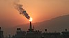

bioremediation

Definition: Bioremediation broadly refers to any process wherein a biological system (typically bacteria, microalgae, fungi, and plants), living or dead, is employed for removing environmental pollutants from air, water, soil, flue gasses, industrial effluents etc., in natural or artificial settings. The natural ability of organisms to adsorb, accumulate, and degrade common and emerging pollutants has attracted the use of biological resources in treatment of contaminated environment. In comparison to conventional physicochemical treatment methods bioremediation may offer considerable advantages as it aims to be sustainable, eco-friendly, cheap, and scalable.
Source: Wikipedia
Wikipedia Page
Wikidata Page